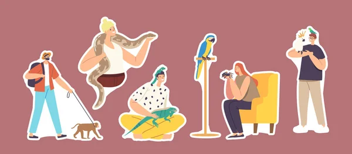
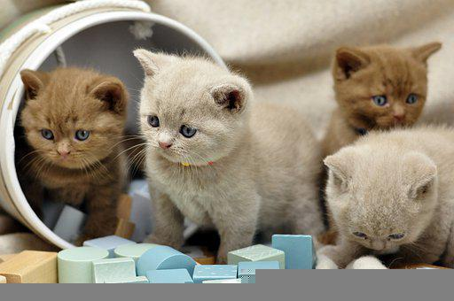

Aqui encontrarás información y tips para el cuidado de tu mascota.
Para que tu mascota y tú disfrutéis al máximo de vuestra relación,
necesita estar saludable y en plena forma.Nosotros estamos comprometidos en el mantenimiento
y recuperación del estado de salud y calidad de vida que se merece.

La relación con tu mascota es única y especial.
Nosotros te ayudamos a mantenerla y fortalecerla.
Al entender las expresiones de tu mascota y aprender que le motiva,
podras conectar con ella a un nuevo nivel y construir una relación de confianza.
Tu mascota es única para ti, y también lo es para nosotros.
Los cuidados preventivos y la detección precoz es la mejor manera de evitar y detectar las enfermedades.

|